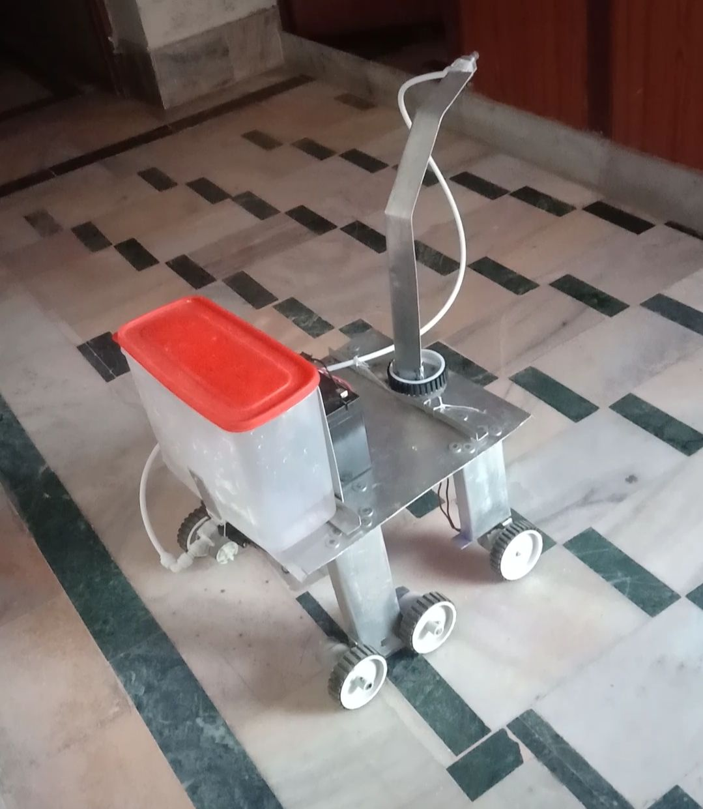
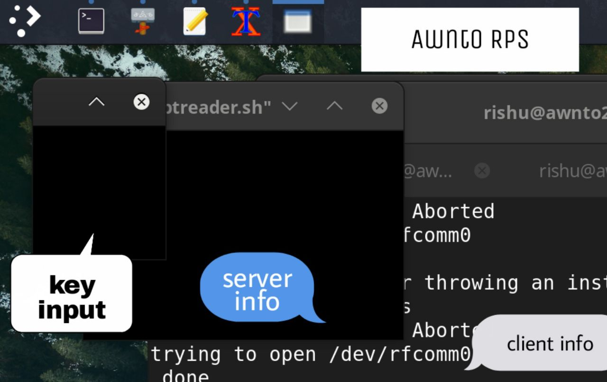

Awnto RPS - Robotic Pesticide Sprayer - User Manual
---------
Author :- Rishabh Sarswa (Rishu)
--------- Table of contents [ INDEX ] -------------
Demo Video : Download by Awnto
download RPS Source Code
download RPS prebuild for linux amd64
Client Manual

Last Docs Update : 2022/06/11
----------------------------------------------
----------- Awnto RPS - Download Source Code
Index
---------
this contain source code for Server ( Robot Arduino ) and Client UNIX
you can download and compile Awnto RPS client , server
Clients currently only for unix systems
OS X (Apple Mac)
Linux
debian
ubuntu
redhat
fedora
alpine
arch
.... other linux distributions
FreeBSD
Solarious
.... other UNIX Systems
Windows Client ( under Development )
RPS source code Download (270KB) tar
RPS source code Download (290KB) zip
after download run command
"tar -xvf rps_dy.tar"
or unzip of you've downloaded as zip
then read readme.txt file
-------------------------------------------
----------- Awnto RPS - Install Prebuild
Index
---------
you can download and use Awnto RPS client on linux
these binaries are only for linux ( amd64 == x86_64 )
RPS amd64 Download (220KB)
after download run command
"tar -xvf rps_amd64.tar"
then read readme.txt file
-------------------------------------------
----------- Awnto RPS - Client Manual
Index
---------
First turn on your Robot
run "./usr/bin/auto.sh"
or execute desktop entry
then enter root password
when you run rps client you will see 3 differents windows
1) gives information about client
2) gives information about server(robot)
3) a black small window for input

----------------------------
Controls
----------------------------
w to move rps forward
s to move rps backward
a rotate front wheels to left
d rotate front wheels to right
space apply breaks
arrow(left) same as 'a'
arrow(right) same as 'd'
g toggle grab_ws mode
in this mode you don't need to continue press w,s key
f toggle force mode
in this mode rps will move with force
(not recommanded arduino keep crashing in this mode)
q spin rps left
e spin rps right
l toggle pump
y move arm left
u move arm right
pageup same as 'y'
pagedown same as 'u'
r move nozzle upwards
t move nozzle downwards
arrow(up) same as 'r'
arrow(down) same as 't'
----------------------------
------------------------------------------------------------------
Rishabh Sarswa (Rishu)
Instagram(@i.rishabhsarswa)
Ravinder Kumar
Rakesh Bishnoi
Rakesh Gehlot
 Surendra Panwar
message us if you want to suggest some features for RPS
----------------------------------
WhatsApp(Rishu) : Here
Mail : i.awnto@gmail.com
Telegram : rishabhsarswa
----------------------------------
Surendra Panwar
message us if you want to suggest some features for RPS
----------------------------------
WhatsApp(Rishu) : Here
Mail : i.awnto@gmail.com
Telegram : rishabhsarswa
----------------------------------